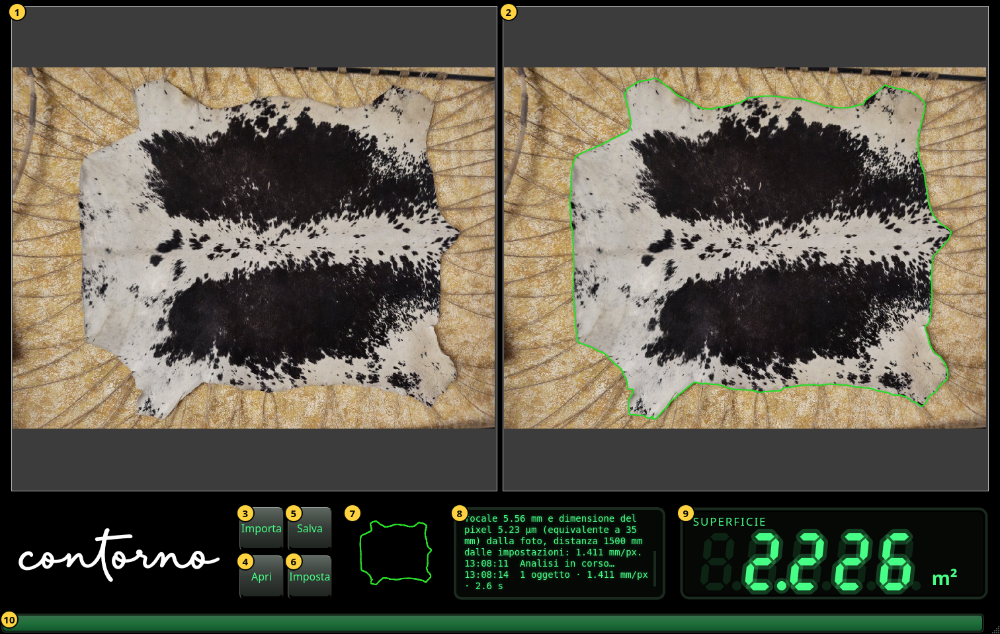
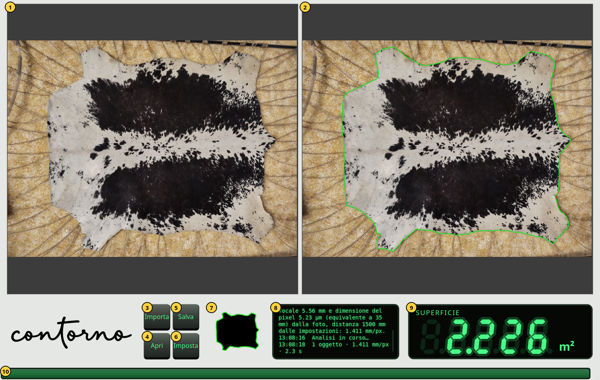

Primi passi
La finestra, le sue parti, lo zoom e il tema chiaro.
Aprite Contorno Indicator. La finestra occupa tutto lo schermo. Prima della prima foto il display mostra dei trattini e il pannello dei messaggi dice Importa una foto degli oggetti sul tavolo.


- La foto così come è stata scattata, intatta.
- La stessa foto con il contorno trovato, in verde. La superficie si misura dentro questo contorno.
- Importa — scegliere una foto dell'oggetto sul tavolo. L'analisi comincia subito.
- Apri — rivedere un'ispezione salvata. Vedete Salvare e aprire ispezioni.
- Salva — conservare foto, fotocamera, contorno e superficie in un unico file zip.
- Imposta — la fotocamera, la lingua e il tema. Vedete Impostazioni.
- La maschera: l'oggetto come lo vede l'analisi, in nero, con il contorno in verde.
- Il pannello dei messaggi. Ogni riga comincia con l'ora. Dice che cosa è stato importato, da dove viene la scala, quanti oggetti sono stati trovati e quanto è durato.
- Il display: la superficie dentro il contorno.
- La barra di attività. Avanza mentre la foto viene analizzata e resta piena per un secondo quando arriva il risultato.
Zoom e scorrimento
Girate la rotella del mouse sopra una foto per ingrandire o rimpicciolire nel punto del puntatore. Trascinate per scorrere. Le due foto si ingrandiscono e scorrono insieme, così il contorno a destra resta sempre sopra lo stesso punto della foto a sinistra. Una foto nuova viene mostrata di nuovo intera.
Il display
Il display mostra la superficie in cm² sotto 0.1 m² (un decimale, per esempio 125.4 cm²) e in m² da 0.1 m² in su (tre decimali, per esempio 2.226 m²). Quando arriva un valore nuovo, le cifre contano fino a esso partendo dal precedente. I numeri si scrivono con il punto, come nel programma.
- Trattini: ancora nessuna foto, oppure l'analisi è fallita. Il pannello dei messaggi dice perché.
- Cifre attenuate: il valore della foto precedente mentre si analizza la nuova. Un numero attenuato non è mai il risultato attuale.
- Cifre luminose: la superficie dentro il contorno mostrato a destra.
Il tema chiaro
La finestra è nera per impostazione predefinita. Il tasto del tema in Impostazioni rende i pannelli grigio chiaro con il logotipo nero; le foto non cambiano.

